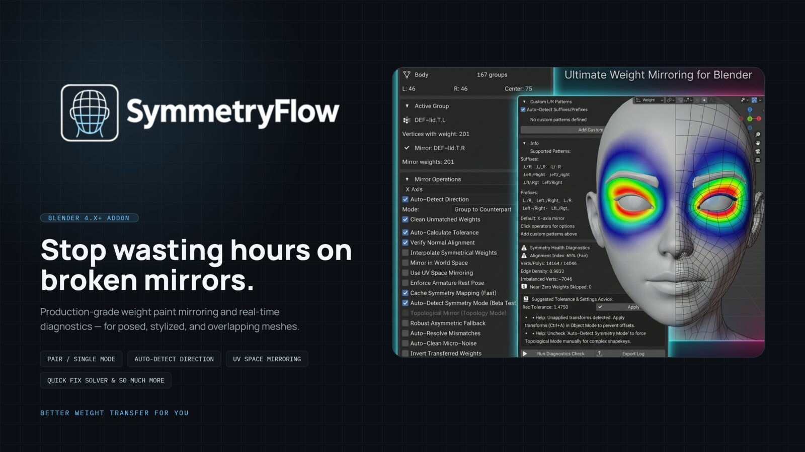
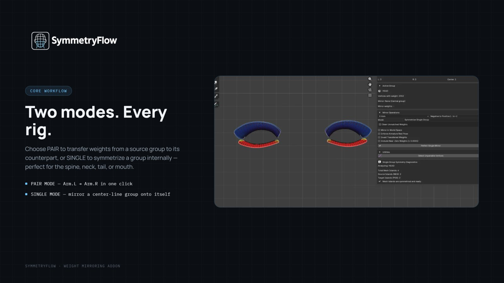
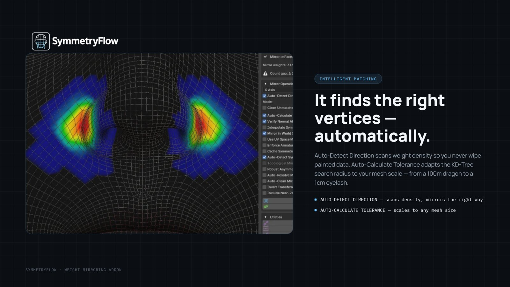
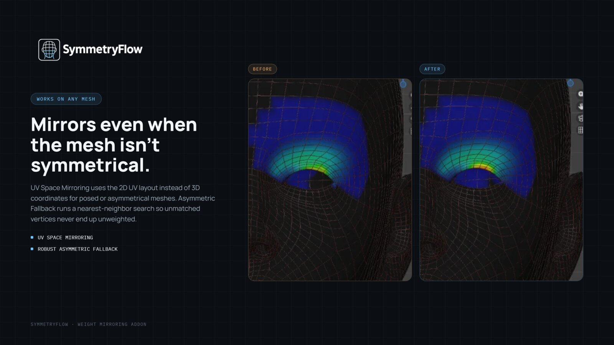
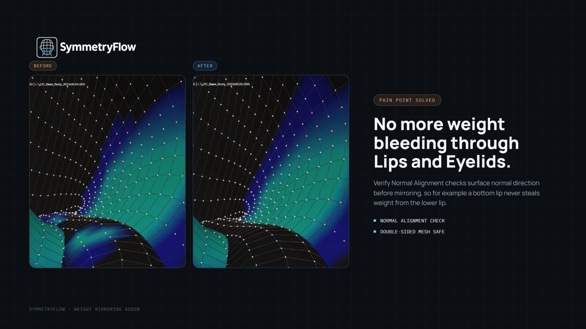
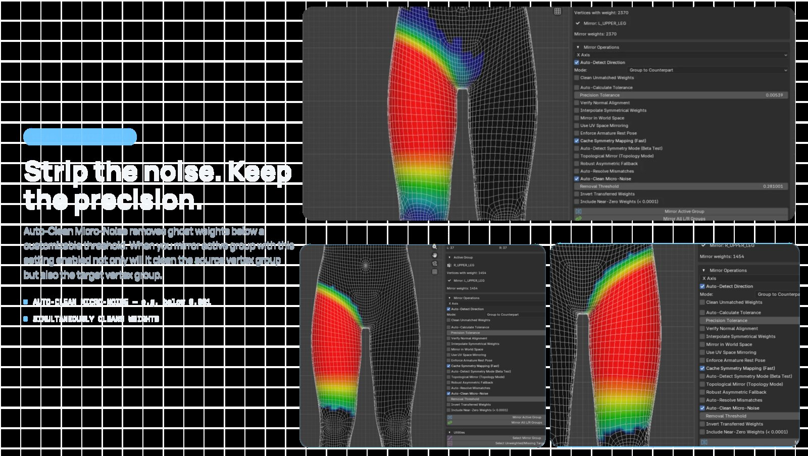
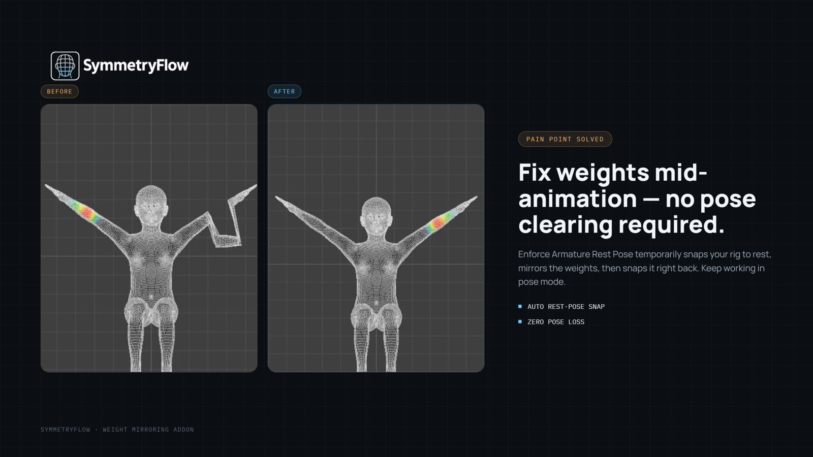
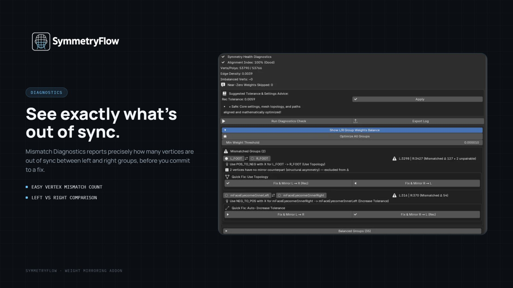
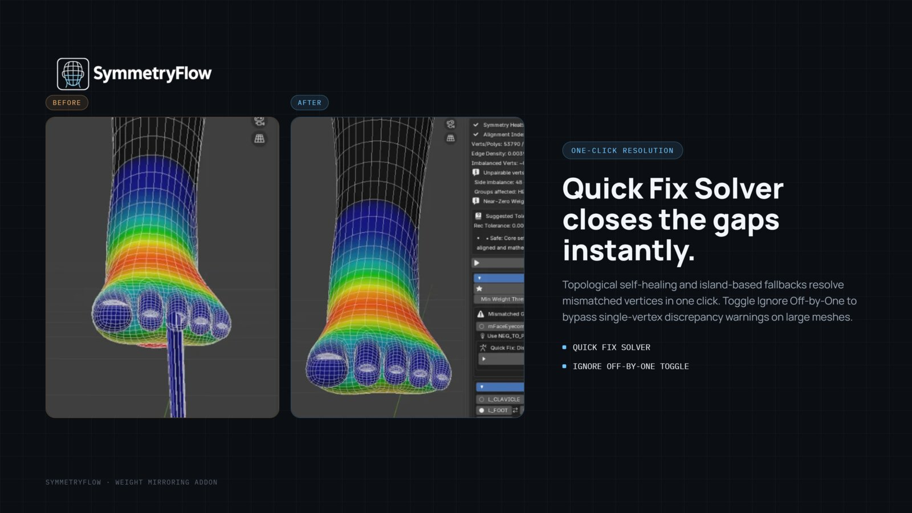

Stop wasting hours on broken mirrors.
Production-grade weight paint mirroring and real-time diagnostics — built for posed, stylized, and overlapping meshes where naive symmetry tools fall apart.

Built for rigs that don't cooperate.
Two modes. Every rig.
Choose Pair to transfer weights from a source group to its counterpart, or Single to symmetrize a group internally — perfect for the spine, neck, tail, or mouth.
- Pair mode — Arm.L → Arm.R in one click
- Single mode — mirror a center-line group onto itself

It finds the right vertices — automatically.
Auto-Detect Direction scans weight density so you never wipe painted data. Auto-Calculate Tolerance adapts the KD-Tree search radius to your mesh scale — from a 100m dragon to a 1cm eyelash.
- Auto-Detect Direction — scans density, mirrors the right way
- Auto-Calculate Tolerance — scales to any mesh size

Mirrors even when the mesh isn't symmetrical.
UV Space Mirroring uses the 2D UV layout instead of 3D coordinates for posed or asymmetrical meshes. Asymmetric Fallback runs a nearest-neighbor search so unmatched vertices never end up unweighted.
- UV space mirroring
- Robust asymmetric fallback

No more weight bleeding through lips and eyelids.
Verify Normal Alignment checks surface normal direction before mirroring, so a bottom lip never steals weight from the lower lip on double-sided or overlapping geometry.
- Normal alignment check
- Double-sided mesh safe

Strip the noise. Keep the precision.
Auto-Clean Micro-Noise removes ghost weights below a customizable threshold. Mirroring an active group with this setting enabled cleans both the source and the target vertex group.
- Auto-clean micro-noise — e.g. below 0.001
- Simultaneously cleans both sides

Fix weights mid-animation — no pose clearing required.
Enforce Armature Rest Pose temporarily snaps your rig to rest, mirrors the weights, then snaps it right back. Keep working in pose mode without losing your place.
- Auto rest-pose snap
- Zero pose loss

See exactly what's out of sync.
Mismatch Diagnostics reports precisely how many vertices are out of sync between left and right groups, before you commit to a fix.
- Easy vertex mismatch count
- Left vs. right comparison

Quick Fix Solver closes the gaps instantly.
Topological self-healing and island-based fallbacks resolve mismatched vertices in one click. Toggle Ignore Off-by-One to bypass single-vertex discrepancy warnings on large meshes.
- Quick Fix Solver
- Ignore Off-by-One toggle

Perfect vertex weight symmetry.
Weight mirroring & diagnostics for Blender · Blender 4.x+